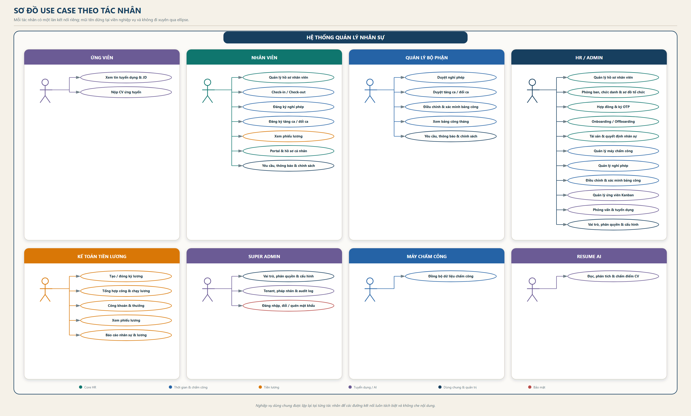
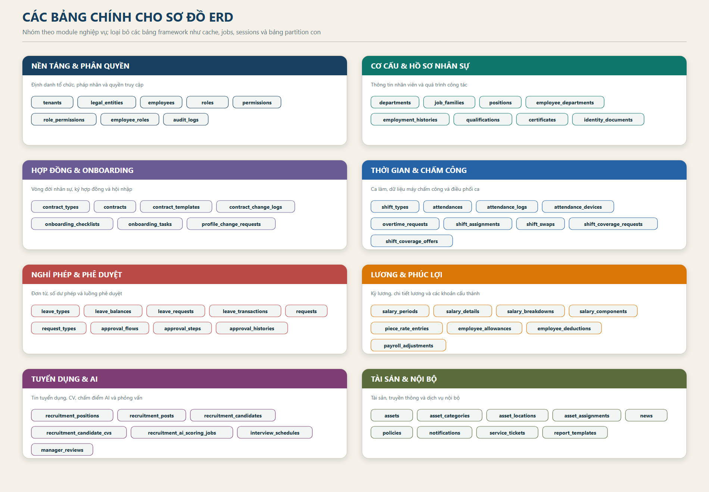
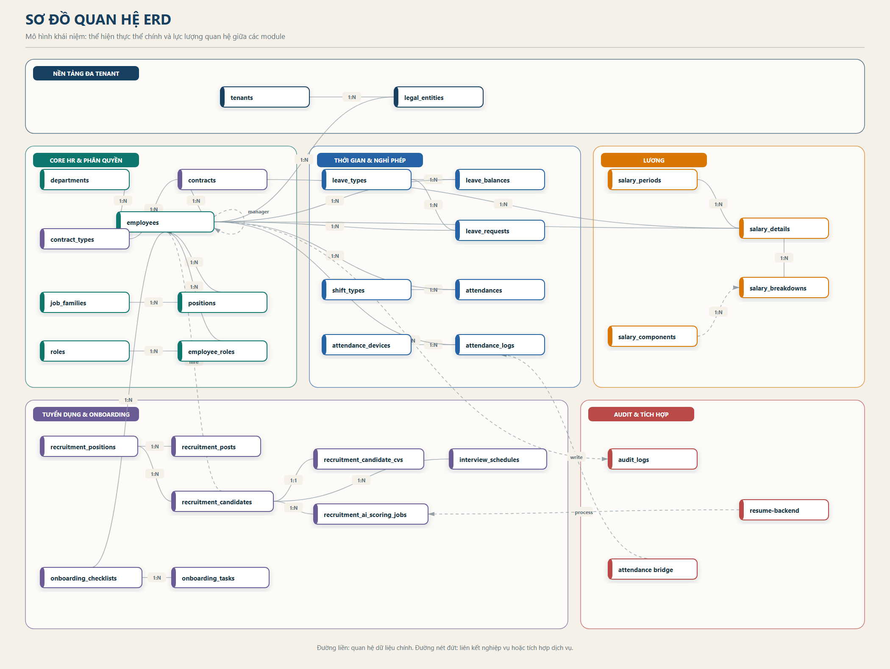
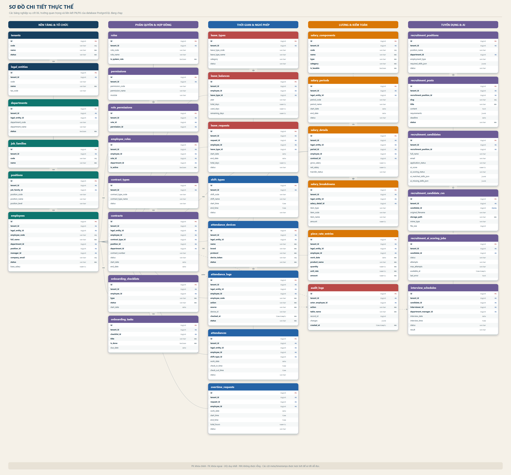

Xây dựng theo cấu trúc file mẫu nhóm 1 (4).docx. Nội dung được đối chiếu từ source Laravel/Vue và database PostgreSQL đang chạy của dự án BEHRM.
Các tác nhân và nhóm nghiệp vụ chính được tổng hợp từ router frontend, API backend và các tích hợp máy chấm công / resume-backend.

Hình 1. Sơ đồ Use Case của hệ thống HRM
Các bảng nghiệp vụ được gom theo module. Bảng framework và các partition con của attendance_logs không đưa vào phạm vi báo cáo.

Hình 2. Các bảng chính cho sơ đồ ERD
Sơ đồ mức khái niệm tập trung vào lực lượng 1:N, 1:1 và các liên kết nghiệp vụ giữa Core HR, chấm công, lương, tuyển dụng và tích hợp ngoài.

Hình 3. Sơ đồ quan hệ ERD của hệ thống HRM
Tên bảng, cột quan trọng, kiểu dữ liệu và ký hiệu PK/FK được lấy từ schema PostgreSQL hiện tại; các cột meta và timestamps được lược bớt để tăng khả năng đọc.

Hình 4. Sơ đồ chi tiết thực thể